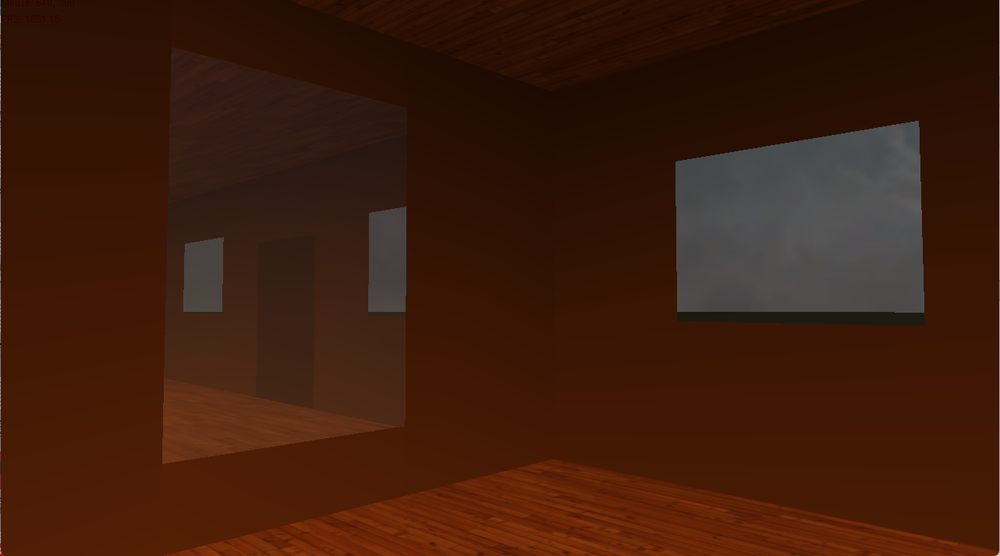
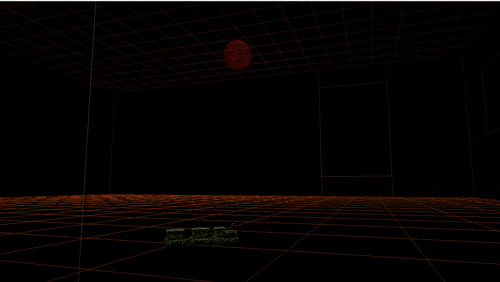
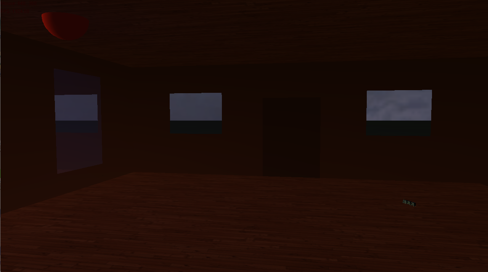
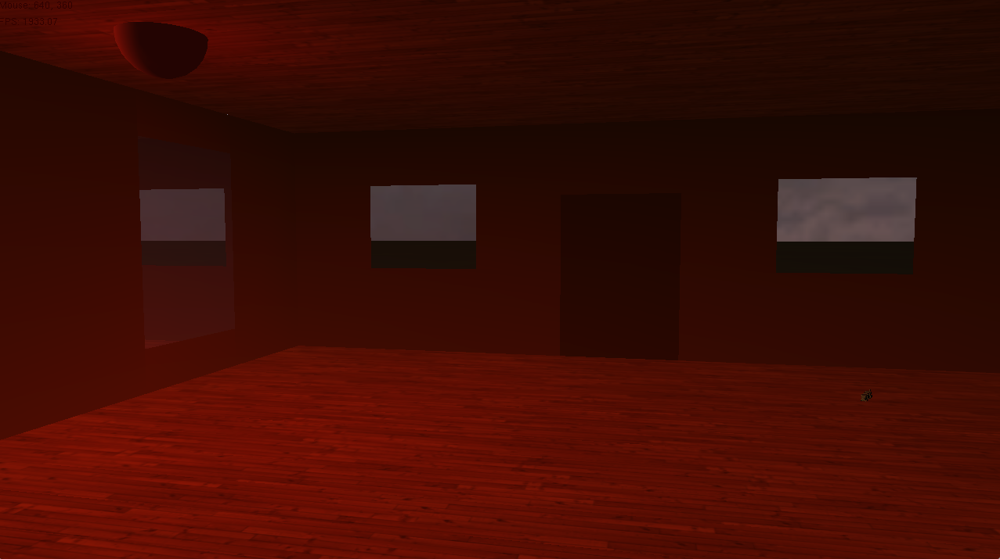
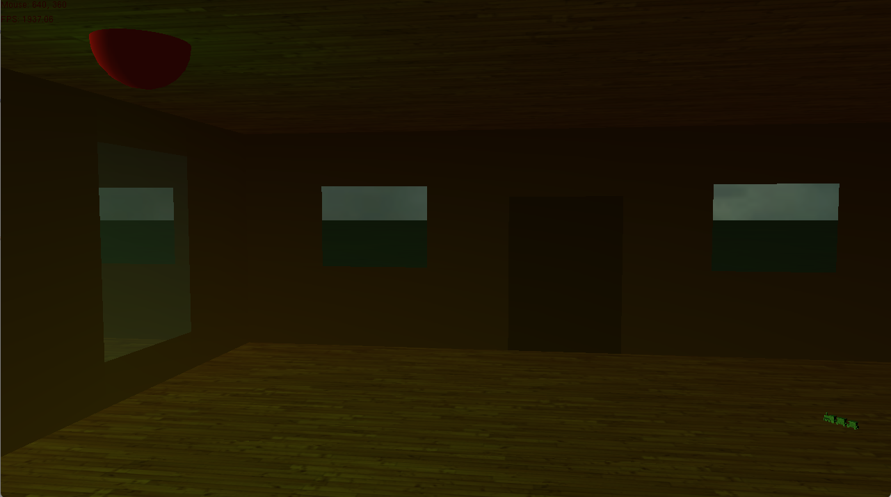

2023 Q4 · Graphics Programmer
3D Scene using OpenGL API
A university graphics programming submission demonstrating lighting, reflections, wireframe rendering, textured models, and camera control.
Project overview
This OpenGL project demonstrates core real-time graphics features through a constructed 3D scene.
My contribution
- Implemented multiple light sources with visible colour variation.
- Created a mirror reflection effect within the scene.
- Added a textured model on a rotating train.
- Implemented wireframe rendering mode.
- Built controllable camera functionality with an optional fixed camera.
Gallery




